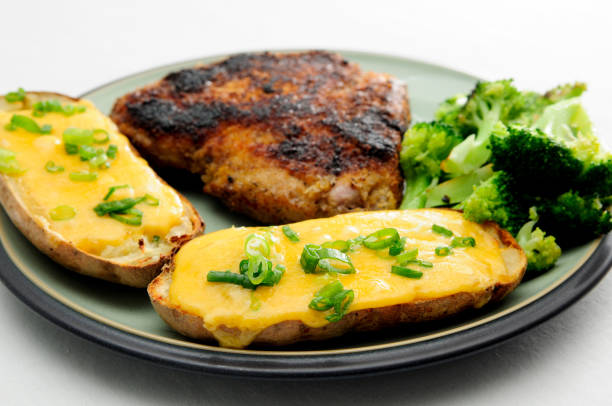

Kentang Keju Brokoli

Bahan:
- 500 gr kentang, kupas dan potong
- air dan garam secukupnya untuk merebus kentang
- 2 sdm margarin
- 3 sdm terigu
- 3 siung bawang putih, cincang
- 3 lembar smoked beef
- 1 bonggol kecil brokoli, potong dan rebus sebentar
- 350 ml susu cair
- 2 butir telur kocok lepas
- parsley
- keju cheddar/mozarella
- garam dan merica, secukupnya
Cara membuat:
1. Didihkan air, rebus kentang dan garam. Jangan terlalu lembek. Tiriskan.
2. Lelehkan margarin, tumis bawang putih sampai harum, masukkan sosis, aduk rata.
3. Masukkan terigu, tuang susu cair, masukkan keju.
4. Bumbui garam, merica dan seledri. Masak sambil diaduk. Angkat dan biarkan hangat.
5. Masukkan telur kocok, aduk rata. Tuang ke loyang, beri mozarella dan taburi sedikit oregano.
6. Panggang sampai matang. Angkat dan sajikan hangat.